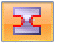
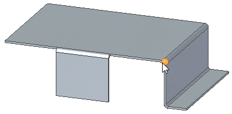
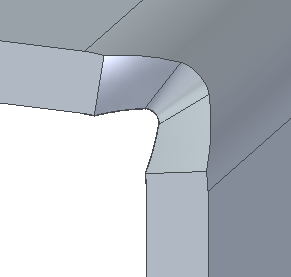
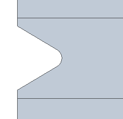
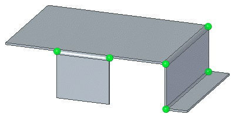
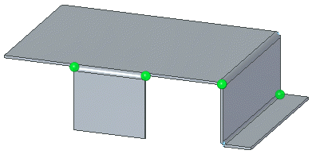
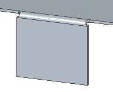
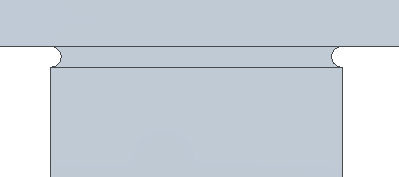

Apply relief to a bend bulge
When applying relief to a bend bulge you can:
Create relief for a single bend
-
Choose Home tab→Sheet Metal group→Bend list→Bend Bulge Relief

. -
Select the bend ends to apply relief.

Note:You can hold the Ctrl key and click additional bends to add them to the select set.
-
On the Bend Bulge command bar, click the Options button.
-
On the Bulge Relief Options dialog box, select a Type, and define the parameters for the relief type.
-
On the Bend Bulge command bar, click Accept
 , and then click Finish.
, and then click Finish.
You can see the results better in the flat pattern.

Create relief for all bends with the same bend radius.
-
Choose Home tab→Sheet Metal group→Bend list→Bend Bulge Relief .
-
To select all the similar bends in a sheet metal part, press the S key.

Note:You can hold the Ctrl key and click a bend to remove it from the select set.

Note:You can press the A key to select all bends independent of radius size.
-
On the Bend Bulge command bar, click the Options button.
-
On the Bulge Relief Options dialog box, select a Type, and define the parameters for the relief type.
-
On the Bend Bulge command bar, click Accept
, and then click Finish.
You can see the results better in the flat pattern.

How do I
Insert a bendEdit a bend radius
Unbend a sheet metal part
Rebend a sheet metal part
Look up more details
Bend commandBend command bar
Bend Options dialog box
Bend command bar
Bend Options dialog box (editing bend radius)
Bend Bulge Relief command
Bend Bulge Relief command bar
Bulge Relief Options dialog box
Unbend command
Unbend command bar
Rebend command bar
Rebend command